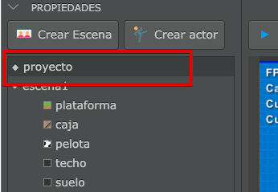
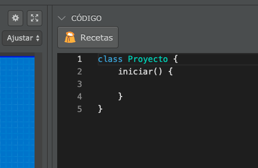
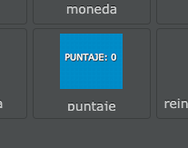
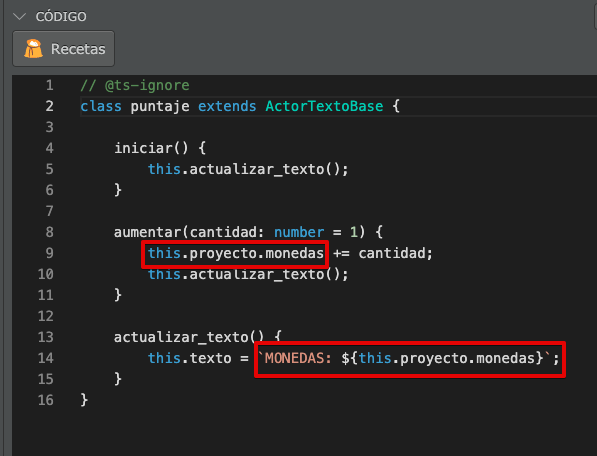
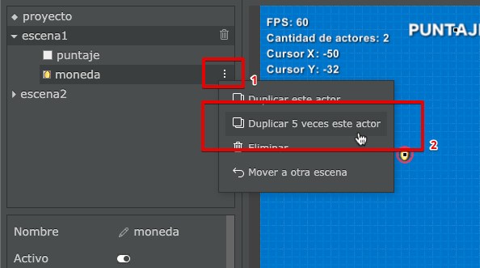
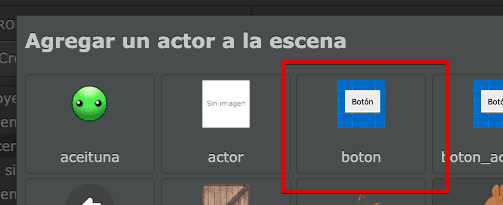

En un proyecto de pilas hay varios elementos que pueden contener su propio código: Tanto las escenas como los actores tienen su propio código asociado.
Ahora bien, en alguna situaciones necesitamos poder guardar variables en algún lugar común que sobreviva más allá de los actores y la escena actual. Por ejemplo si queremos almacenar la cantidad de vidas disponibles que tiene un actor cuando pasa de una escena a otra.
Para ejemplificar cómo podemos usar el código de la escena voy a dar un ejemplo. Imagina que tenemos un juego en el que tenemos que recolectar monedas con el mouse, pero queremos que la cantidad de monedas persista entre un nivel y otro.
Primero tenemos que seleccionar el proyecto desde el panel de propiedades:

Luego, vamos a ver que en el panel de código aparece el código del proyecto:

El código está casi vacío, así que vamos a crear el contador de monedas recolectadas y vamos a darle un valor inicial:
Ahora vamos a crear un actor para “visualizar” ese contador directamente en pantalla.
Pulsá el botón “Crear actor” y luego seleccioná al actor “puntaje”:

Ahora editemos el código para que este actor pueda acceder a la variable puntaje del proyecto. Tenemos que cambiar estas lineas de código:

Observá que desde un actor podemos acceder directamente al proyecto usando el código this.proyecto, y por supuesto vamos a poder acceder a todas las variables o métodos del proyecto directamente.
El código completo debería quedarte así:
// @ts-ignore
class puntaje extends ActorTextoBase {
iniciar() {
this.actualizar_texto();
}
aumentar(cantidad: number = 1) {
this.proyecto.monedas += cantidad;
this.actualizar_texto();
}
actualizar_texto() {
this.texto = `MONEDAS: ${this.proyecto.monedas}`;
}
}y una vez que ejecutamos el juego debería verse así:
Ahora creá un actor de tipo moneda, con este código:
// @ts-ignore
class moneda extends Actor {
cuando_hace_click() {
this.proyecto.monedas += 1;
this.eliminar();
}
}y luego duplica ese actor unas 5 veces desde el menú:

Y ya casi lo tenemos listo, si ejecutas el proyecto vas a ver cómo el contador de monedas almacena y muestra la variable monedas directamente desde el proyecto:
Ahora bien, lo más interesante de almacenar variables en el proyecto es que conservarán su valor incluso si cambiamos de una escena a otra.
Hagamos la prueba: pulsa el botón “crear escena” y en el código de la escena coloca este código para que el usuario pueda ver el puntaje cuando ingresa a esta escena:
y luego, en la escena principal, pulsa el botón “crear actor” para crear un actor de tipo “botón”:

y por último, cambia el código de este actor para que nos permita pasar a la siguiente escena cuando se pulsa:
// @ts-ignore
class boton extends ActorTextoBase {
cuando_hace_click() {
this.pilas.cambiar_escena("escena2");
}
}Si bien este ejemplo es muy simple, es un punto de partida para poder mantener los datos del jugador durante toda su partida.
Te recomiendo mirar el proyecto “mantener-valores-entre-escenas” de la sección “ejemplos” de pilas para que veas cómo se puede mejorar este mismo proyecto que realizamos acá.